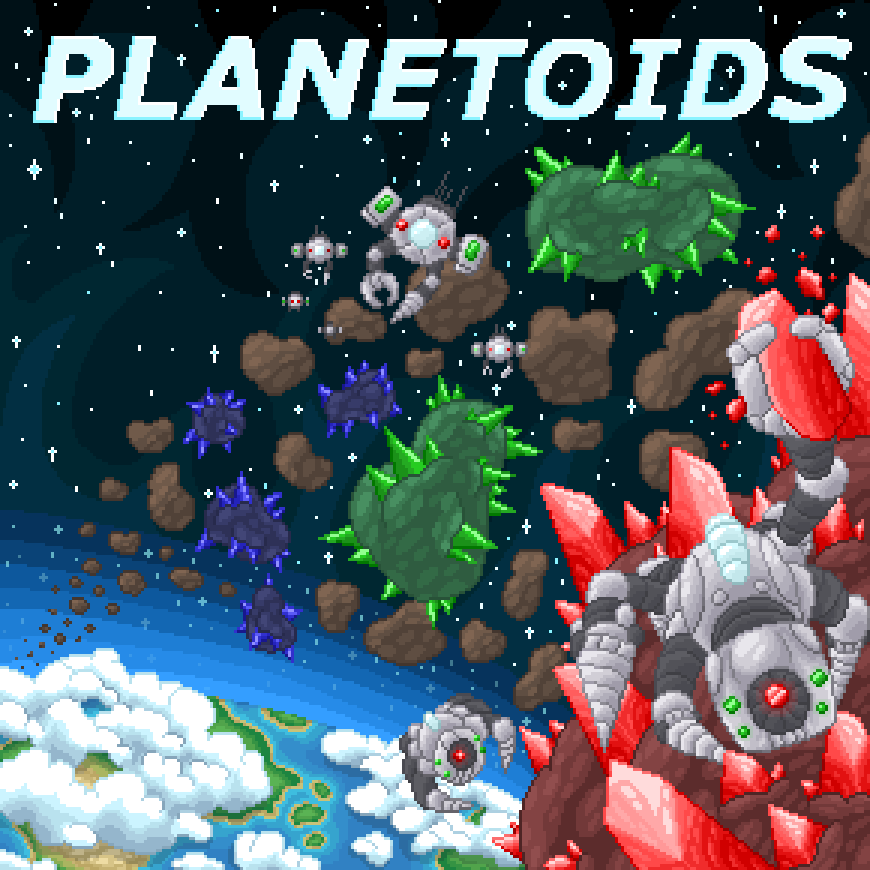

Planetoids

Planetoids is a competitive print-and-play board game for 2-4 players.
Players vie for dominance over the precious crystal deposits without exhausting their resources too quickly.
Planetoids has an abundance of strategic depth while still being approachable with a simple ruleset.
Will you play a game of risky dice rolls with big rewards, or will you take a slower, more calculated path to victory? The choice is yours.
It is available for purchase on itch.io.
Artist: Pierce Richards (portfolio)
Song

Song is my eclectic art project I worked on in my free time during the spring semester of 2024.
It is an 18-card solitaire print-and-play game.
I took advantage of this opportunity to experiment with the medium and try something new that might not have widespread appeal.
It is available for free on itch.io.